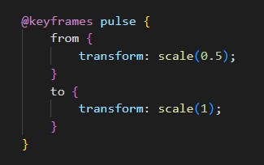
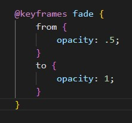

CSS Animation
CSS animation is a powerful tool for adding engaging and interactive visual effects to a website or web application. It allows web developers to create dynamic and eye-catching animations that can enhance the user experience and make a website feel more modern and polished. In this blog post, we will explore the basics of CSS animation, how it works, and some tips for getting started.
What is CSS animation?
CSS animation is a technique for adding movement and visual effects to web pages using Cascading Style Sheets (CSS). With CSS animation, web developers can create transitions and animations that can be triggered by user actions, such as clicking a button or hovering over an element. CSS animation is a popular alternative to using JavaScript for animation, as it can often be faster and more lightweight.
How does CSS animation work?
CSS animation works by using CSS properties to change the appearance of an element over time. To create an animation, developers define a set of keyframes, which specify how the element should look at different points in time. For example, a keyframe might define the position, size, and color of an element at the start and end of an animation. Developers can then use the @keyframes rule in CSS to define the animation sequence. The @keyframes rule specifies the name of the animation, the duration of the animation, and the keyframes that make up the animation. Developers can also use other CSS properties to control the timing and behavior of the animation, such as easing functions, delay times, and iteration counts.
 
Tips for getting started with CSS animation
- Start simple: When getting started with CSS animation, it's best to start with simple animations and work your way up to more complex ones. Try experimenting with basic properties like opacity and transform to get a feel for how animation works.
- Use easing functions: Easing functions can be used to control the rate of change in an animation. They can be used to create more natural-looking animations that don't feel jarring or abrupt.
- Test across browsers: CSS animation is supported across most modern browsers, but there can be slight differences in how different browsers handle animation. Be sure to test your animations across different browsers to ensure they work correctly.
- Use animation libraries: There are many animation libraries available that can help simplify the process of creating complex animations. Libraries like Animate.css and AOS can be used to quickly add pre-built animations to your website.